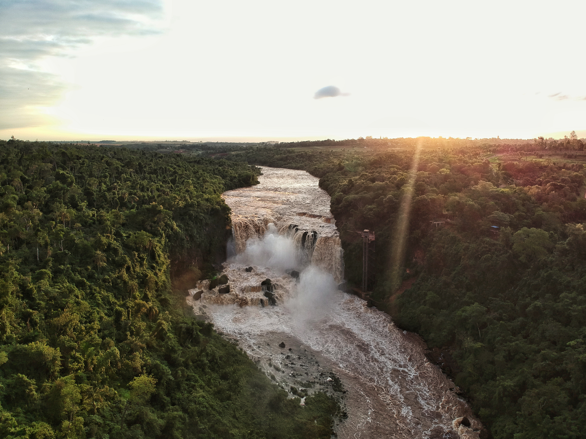
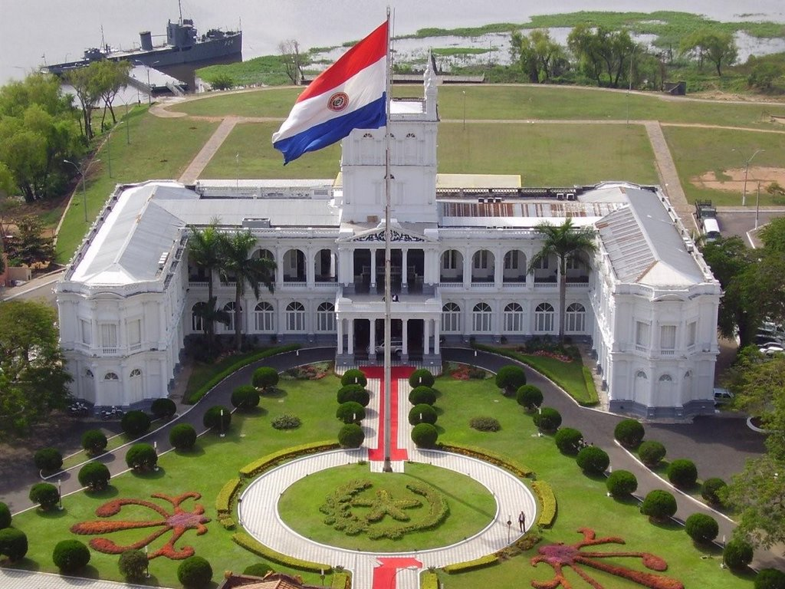

Bienvenido a Paraguay
Este sitio web es de Paraguay.
Este sitio web incluira: Attracciones, Musica y Comida
Atracciones:
1) El Salto de Monday  2) Palacio de los Lopez  3)Parque Nacional Ybycuí Mapa de Paraguay-
Mapa de Paraguay-
 Video de Bienvenida a Paraguay:
Plantas Frecuentes de Paraguay
Video de Bienvenida a Paraguay:
Plantas Frecuentes de Paraguay
- El Caranday
- El Cocotero
- Palo Santo
- Guatambu
 Los Tempranos son una banda paraguyana que es bastante reconocida y es muy recomendada cuando se va a aprender de la cultura.
La Comida De Paraguay:
1) La Chipa de almidón
Los Tempranos son una banda paraguyana que es bastante reconocida y es muy recomendada cuando se va a aprender de la cultura.
La Comida De Paraguay:
1) La Chipa de almidón
 2) Bori bori
2) Bori bori
 Mas Informacion de Paraguay:
Click here
Mas Informacion de Paraguay:
Click here